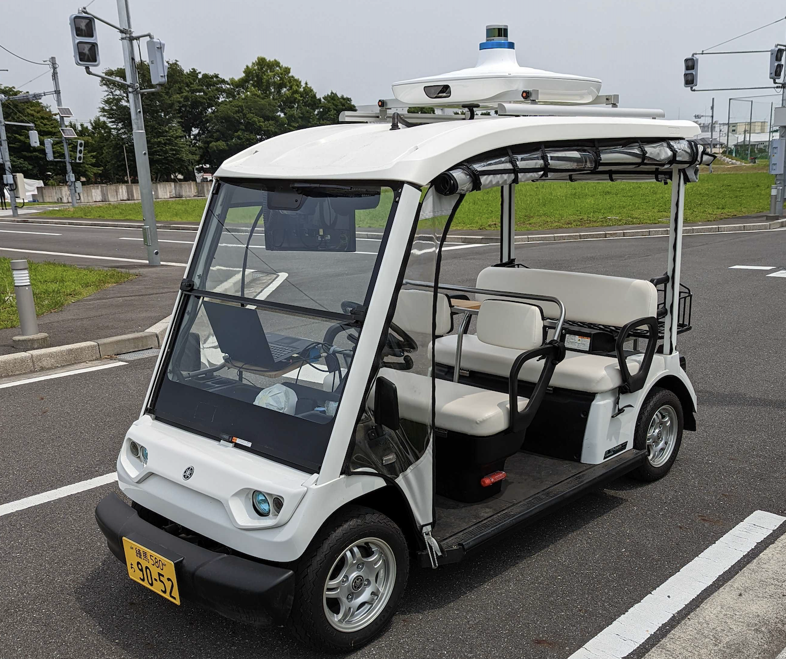

[WIP] 決勝大会について
はじめに
決勝大会では競技参加者の開発用ノートパソコンでゴルフカート型の自動運転車両を走行させ、開発した自動運転ソフトウェアの性能を競います。 競技参加者の皆様には、開発用ノートパソコンの車両への接続から自動運転走行開始までの操作を実施していただきます。

走行の様子
（引用: https://www.jsae.or.jp/jaaic2022/final.html "競技解説 Explanation of the competition"）
競技車両について

競技に使用する車両
- 競技に使用する車両は予選のE2E空間で操作した車両と同様のセンサー(LiDAR)を備えています。一方で車両の運動特性は、シミュレーションのモデルと同一ではありません。
- LiDARに繋がるネットワークインターフェースとCANインターフェースを備えています。開発用ノートパソコンをこれらに接続することで自動運転走行を実施します。
- 競技に使用する車両にはメンターと、セーフティドライバーが同乗します。メンターはインターフェースの接続や、自動運転ソフトウェア操作のサポートを、セーフティドライバーは手動運転での車両の移動と、自動運転走行時の監視を行います。
- 車両の制御モードには、
自動モードと手動モードの2種類があり、セーフティードライバーの操作により切り替えることができます。 - 自動運転走行中、セーフティードライバーはブレーキをかけることで、車両の制御モードを
自動モードから手動モードに切り替えることができます。これをオーバーライドといいます。セーフティドライバーは自動運転を継続することが危険と判断された場合にオーバーライドを実施します。